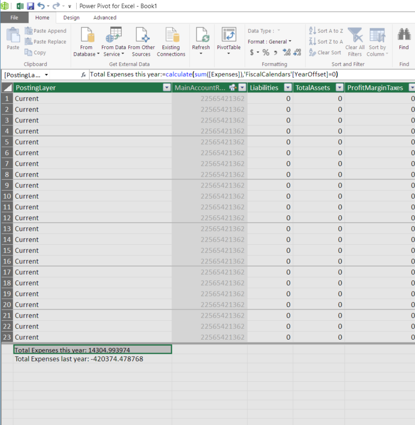

Migration guidance for Segmented Entry controls
[!include[banner](../includes/banner.md)]This topic guides you through the process of migrating a Segmented Entry control from the Microsoft Dynamics AX 2012 pattern to the new pattern in Microsoft Dynamics AX.
The goal of the new design is to encapsulate the control implementation and not require that forms interact with the classes that back the control. Therefore, in Microsoft Dynamics AX, all forms should interact only with the application programming interface (API) of the Segmented Entry control instance. They should not interact directly with the controller classes (such as LedgerDimensionAccountController and DimensionDynamicAccountController). Any property that was previously manipulated or called on the controller must now be called on the control.
Notes:
Some APIs have naming differences between the controller and the control. The following table lists these APIs.
Controller method (old) Control method (new) parmDate parmControlDate parmFilterLedgerPostingType parmPostingType parmDimensionAccountStorageUsage parmDimensionAccountStorageUsageType Example
- Before: controller.parmDate(systemDateGet())
- After: LedgerAccount.parmControlDate(systemDateGet());
In this example, controller > LedgerDimensionAccountController instance and LedgerAccount > new Segmented Entry control instance.
In methods that have been overridden on controls and data fields, the code upgrade rule replaces method calls on the controllers with method calls on each control instance that was using a particular controller.
Example
Before:
Public void jumpRef() { ledgerDimensionDefaultAccountcontroller.jumpRef(); }After:
Public void jumpRef() { segmentedEntryControl1.jumpRef(); segmentedEntryControl2.jumpRef(); }
These changes are made so that it's easier to copy and paste code that must be moved elsewhere (for example, in some instances of loadSegments() and other such methods). You can ignore this change when you decide whether the method can be deleted. Your decision should depend on whether the method has any custom logic.
The code upgrade script does not handle cases where a controller is instantiated within a method. These cases must be migrated manually.
The MRU functionality from Microsoft Dynamics AX 2012 has been removed in Dynamics AX and won't be replaced.
parmTaxCode has been removed. There is no replacement.
Properties
The custom properties for the Segmented Entry control are found under Controller. The following screen shot shows an example.

Not all properties apply to all Controller class types. Properties that don't apply to a selected controller class will be disabled. The following table provides details about the properties.
| Property | Valid values | Usage |
|---|---|---|
| Account Type Field | A field from the datasource. | Determines the type of account used. Typically utilized for journal entry from a multi-segment ledger account to single segment values from other backing tables such as Cust, Vend, Bank, Project and similar. |
| Controller Class | One of 6 Controller classes. For example, LedgerDimensionDefaultAccountController. | Determines the pattern and behavior of the Segmented Entry control. More information about this property is provided below. |
| Include Financial Accounts | NoYes | Determines if Main accounts that are Financial accounts are valid for use. |
| Include Total Accounts | NoYes | Determines if Main accounts of type Total are valid for use. |
| Is Default Account | TrueFalse | For a Dynamic account, determines if the account should be a default or full account. |
| Lock Main Account Segment | NoYes | Controls whether the Main account segment is locked. Typically used in journals and distributions based upon configuration. |
| Posting Type | A value from the LedgerPostingType enumeration. | The Main account is validated to see if the posting type is allowed to be used with that account. |
| Validate Blocked For Manual Entry | NoYes | Determines if the 'Blocked for Manual Entry' status on the dimension should be respected or not. |
Controller class property
The following table provides details about each controller.
| Controller | Details |
|---|---|
| BudgetLedgerDimension | This Controller provides budget based support for data entry in the Segmented Entry control. When using this controller, an Account Structure must be provided to the Segmented Entry control. |
| BudgetPlanningLedgerDimension | This Controller provides budget planning based support for data entry in the Segmented Entry control. When using this controller, an Account Structure must be provided to the Segmented Entry control. |
| DimensionDynamicAccount | This Controller provides support for multiple account types in the Segmented Entry control. |
| LedgerDimensionAccountAlias | This Controller provides support for account aliases in the Segmented Entry control |
| LedgerDimensionAccount | This Controller provides support for multi-segment data entry in the Segmented Entry control. |
| LedgerDimensionDefaultAccount | This Controller provides support for default accounts in the Segmented Entry control. |
Migration steps
Step 1
AX 2012
If SegmentedEntry appears as the type next to any control, change it to SegmentedEntryControl.
{kind=link}
Dynamics AX
An easy method is to append "_old" to the name of the old control, add the new control (which should have the original name of the control), migrate all the settings over, and then delete the old control.
Note
To prevent tests and other code that references the control from breaking, make sure that the new control has the same name as the old control. To add the new control, right-click the parent control that will contain the Segmented Entry control, and then select New > SegmentedEntryControl.
{kind=link}
The following screen shot shows how new control will look.
{kind=link}
Step 2
AX 2012
Override the jumpRef() control/field method.
public void jumpRef()
{
ledgerDimensionDefaultAccountController.jumpRef();
}
Dynamics AX
Remove the jumpRef() method completely if it contains no other functionality. If there is other custom jumpRef functionality, leave that. However, jumpRef is otherwise automatically handled by the control.
Step 3
AX 2012
Override the loadAutoCompleteData() control method.
public void loadAutoCompleteData(LoadAutoCompleteDataEventArgs _e)
{
ledgerDimensionDefaultAccountController.loadAutoCompleteData(_e);
super(_e);
}
Dynamics AX
Remove the loadAutoCompleteData() method.
Step 4
AX 2012
Override the loadSegments() control method.
public void loadSegments()
{
super();
ledgerDimensionDefaultAccountController.loadSegments();
ledgerDimensionDefaultAccountController.parmControl(this);
}
Dynamics AX
If the loadSegments() method does nothing except call the controller's loadSegments() and parmControl() methods, remove it. However, make a note of the SEC control instance that is passed to the parmControl() call. The methods that were being called will now have to be called on that instance.
Step 5
AX 2012
Override the loadSegments() control method.
public void loadSegments()
{
super();
dimAccountController.parmControl(this);
dimAccountController.parmJournalName(ledgerJournalTable.JournalName);
dimAccountController.parmCurrency(ledgerJournalTrans.CurrencyCode);
dimAccountController.parmDataAreaId(ledgerJournalTrans.Company ? ledgerJournalTrans.Company : curext());
dimAccountController.parmDate(ledgerJournalTrans.TransDate);
dimAccountController.parmTaxCode(ledgerJournalTrans.TaxCode);
dimAccountController.loadSegments();
}
Dynamics AX
If the loadSegments() method was used to set parameters on the controller, the calls to parm method must be moved to every location where the source of the parm method can change. In most cases, these locations are the modified() method on the corresponding data field and/or the active() method on the data source. For example, some of the migrated code for the loadSegments() override on the left would look like this.
dimAccountController.parmControl(this) -> No longer needed.
Make a note of the SEC control instance that is passed on to the parmControl() call. The methods that were being called on the controller will now have to be called on that instance.
dimAccountController.parmJournalName(ledgerJournalTable.JournalName) ->
LedgerJournalTable data source,
JournalName field,
public void modified()
{
.parmJournalName(ledgerJournalTable.JournalName);
}
LedgerJournalTable data source
public void active()
{
.parmJournalName(ledgerJournalTable.JournalName);
}
Note
After you've moved all the code out of the loadSegments() method, you can delete the method.
Step 6
AX 2012
Override the loadSegments() control method. In some cases, the loadSegments() method might use a table buffer to set parameters on the controller, but that table buffer isn't a data source on the form. For example, on the LedgerJournalTransDaily form, the original implementation of loadSegments() looked like this.
public void loadSegments()
{
super();
dimAccountController.parmControl(this);
dimAccountController.parmJournalName(ledgerJournalTable.JournalName);
dimAccountController.parmCurrency(ledgerJournalTrans.CurrencyCode);
dimAccountController.parmDataAreaId(ledgerJournalTrans.Company ? ledgerJournalTrans.Company : curext());
dimAccountController.parmDate(ledgerJournalTrans.TransDate);
dimAccountController.parmTaxCode(ledgerJournalTrans.TaxCode);
dimAccountController.loadSegments();
currentMainAccountId = dimAccountController.getValue(DimensionAttribute::getMainAccountDimensionAttribute());
}
Note that the JournalName property is set from the ledgerJournalTable buffer, but the LedgerJournalTable table isn't a data source on the form.
Dynamics AX
In such cases, you can't move that code to either the active() method of a data source or the modified() method on the data field. Instead, you should identify where the table buffer is being set. For example, in the original implementation of the LedgerJournalTransDaily form, the ledgerJournalTable buffer was set in the initLedger() method on the form. It should be evident that the value that is passed to parmJournalName() can change only when the buffer is reassigned in the initLedger() method. Therefore, code would have to be moved to the initLedger() method after the assignment of the buffer. Also, in accordance with the general guidelines, the parmJournalName() method would be called on the control instance.
void initLedger()
{
TransDate dateFrom = dateNull();
TransDate dateTo = systemDateGet();
if (element.args().dataset() == tableNum(LedgerJournalTable))
{
ledgerJournalTable = element.args().record();
LedgerJournalTrans_AccountNum.parmJournalName(ledgerJournalTable.JournalName);
LedgerJournalTrans_AccountNum1.parmJournalName(ledgerJournalTable.JournalName);
GridOffsetAccount.parmJournalName(ledgerJournalTable.JournalName);
LedgerJournalTrans_OffsetAccount1.parmJournalName(ledgerJournalTable.JournalName);
...
}
...
}
Step 7
AX 2012
Override the segmentValueChanged() control method.
public void segmentValueChanged(SegmentValueChangedEventArgs _e)
{
super(_e);
ledgerDimensionDefaultAccountController.segmentValueChanged(_e);
}
Dynamics AX
If the implementation of segmentValueChanged() does nothing except call super() and the segmentValueChanged() method on the controller, you can remove the method.
Step 8
AX 2012
Override the segmentValueChanged() control method.
public void segmentValueChanged(SegmentValueChangedEventArgs _e)
{
super(_e);
dimOffsetAccountController.segmentValueChanged(_e);
currentOffsetMainAccountId = ledgerJournalEngine.onOffsetAccountSegmentChanged(dimOffsetAccountController, currentOffsetMainAccountId, ledgerJournalTrans);
}
Dynamics AX
If the implementation of segmentValueChanged() has additional logic, you must replace the method with the onSegmentChanged() method, as shown here.
public void onSegmentChanged(DimensionControlSegment _segment)
{
currentOffsetMainAccountId = ledgerJournalEngine.onOffsetAccountSegmentChanged(this, currentOffsetMainAccountId, ledgerJournalTrans);
}
Notes:
- To add the onSegmentChanged() method, follow these steps:
- Expand the Segmented Entry control to add the method to.
- Right-click the Methods node, and then select Override > onSegmentChanged.
- The new method doesn't have to call super() or any other method on either the control or the controller.
Step 9
AX 2012
Override the validate() control method.
public boolean validate()
{
boolean isValid;
isValid = super();
isValid = ledgerDimensionDefaultAccountController.validate() && isValid;
return isValid;
}
Dynamics AX
Remove the validate() method, unless you have additional validation. The super() call does everything that this code used to do. Therefore, keep only any new code that you have.
Step 10
AX 2012
Override the lookup() control method.
public void lookup()
{
switch (emplParameters_RU.BankCloseACType)
{
case LedgerJournalACType::Bank:
BankAccountTable::lookupBankAccount(this);
break;
case LedgerJournalACType::Cust:
CustTable::lookupCustomer(this);
break;
case LedgerJournalACType::FixedAssets:
AssetTable::lookupAccountNum(this);
break;
case LedgerJournalACType::Ledger:
super();
break;
case LedgerJournalACType::Project:
ProjTable::lookupProjId(this, emplParameters_RU);
break;
case LedgerJournalACType::Vend:
VendTable::lookupVendor(this);
break;
default:
super();
break;
}
}
Dynamics AX
Leave the lookup() method as it is.
Step 11
AX 2012
Override the lookupReference() control method.
public Common lookupReference()
{
Common ret;
ret = super();
return ret;
}
Dynamics AX
If the lookupReference() method uses the default implementation, you can delete it.
Step 12
AX 2012
Override the modified() control method.
public boolean modified()
{
boolean ret;
ret = super();
if (tmpCurrencyLedgerGainLossAccount.LedgerDimension)
{
tmpCurrencyLedgerGainLossAccount.AccountName =
MainAccount::getLocalizedNameByMainAccountId(
DimensionStorage::getMainAccountNumFromLedgerDimension(
tmpCurrencyLedgerGainLossAccount.LedgerDimension), ledger.ChartOfAccounts);
}
else
{
tmpCurrencyLedgerGainLossAccount.AccountName = '';
}
return ret;
}
Dynamics AX
Leave the modified() method as it is.
Step 13
AX 2012
Override the gotFocus() control method.
void gotFocus()
{
super();
if (ledgerJournalTable.FixedOffsetAccount)
{
ledgerJournalTrans_OffsetAccount.allowEdit(ledgerJournalTrans.OffsetAccountType == LedgerJournalACType::Ledger);
}
else if (!ledgerJournalTrans_OffsetAccount.allowEdit())
{
ledgerJournalTrans_OffsetAccount.allowEdit(true);
}
}
Dynamics AX
The approach is similar to the approach for the loadSegments() method. The code must be moved to every location where the source of the parm method can change. In most cases, these locations are the modified() method on the corresponding data field and/or the active() method on the data source. For example, for the preceding code, the migrated code would look like this.
LedgerJournalTable data source,
FixedOffsetAccount field
public void modified()
{
if (ledgerJournalTable.FixedOffsetAccount)
{
ledgerJournalTrans_OffsetAccount.allowEdit(ledgerJournalTrans.OffsetAccountType == LedgerJournalACType::Ledger);
}
else if (!ledgerJournalTrans_OffsetAccount.allowEdit())
{
ledgerJournalTrans_OffsetAccount.allowEdit(true);
}
}
LedgerJournalTrans data source,
OffsetAccountType field
public void modified()
{
if (ledgerJournalTable.FixedOffsetAccount)
{
ledgerJournalTrans_OffsetAccount.allowEdit(ledgerJournalTrans.OffsetAccountType == LedgerJournalACType::Ledger);
}
else if (!ledgerJournalTrans_OffsetAccount.allowEdit())
{
ledgerJournalTrans_OffsetAccount.allowEdit(true);
}
}
LedgerJournalTrans data source:
public void active()
{
if (ledgerJournalTable.FixedOffsetAccount)
{
ledgerJournalTrans_OffsetAccount.allowEdit(ledgerJournalTrans.OffsetAccountType == LedgerJournalACType::Ledger);
}
else if (!ledgerJournalTrans_OffsetAccount.allowEdit())
{
ledgerJournalTrans_OffsetAccount.allowEdit(true);
}
}
LedgerJournalTable data source:
public void active()
{
if (ledgerJournalTable.FixedOffsetAccount)
{
ledgerJournalTrans_OffsetAccount.allowEdit(ledgerJournalTrans.OffsetAccountType == LedgerJournalACType::Ledger);
}
else if (!ledgerJournalTrans_OffsetAccount.allowEdit())
{
ledgerJournalTrans_OffsetAccount.allowEdit(true);
}
}
Note
After all the code has been moved out of the gotFocus() method, you can delete the method.
Step 14
AX 2012
In the form init() method:
ledgerDimensionDefaultAccountController = LedgerDimensionDefaultAccountController::construct(vendParameters_ds, fieldStr(VendParameters, ClearingLedgerDimension));
Dynamics AX
Set the following properties on the control:
- Data Source
- Reference Field
- Controller Class
{kind=link}
{kind=link}
Note
A controller class is required for the control to work. Therefore, a run-time error will be thrown if the Controller Class property isn't set.
Step 15
AX 2012
ledgerDimensionAccountController.setValues(ledgerJournalTrans.DefaultDimension, false);
Dynamics AX
A map of the dimension specifiers must be created that can then be sent into the Segmented Entry control's setDimensionSpecifiers method.
Map defaultDimensionSpecifiers = LedgerDimensionDefaultingEngine::getDefaultDimensionSpecifiers(ledgerJournalTable.DefaultDimension);
TmpLedgerJournalSplitLines_LedgerAccount.setDimensionSpecifiers(defaultDimensionSpecifiers, false);
Note
You can add anything to the dimension specifiers map before it's sent to the control. You can also create a new map here. (See the onSegmentChangedForPrimaryAccount method in the LedgerJournalEngine class for similar logic.)
Step 16
AX 2012
parmControl() method calls: (These are typically present in the form's init() method or one of the methods that are overridden on the control.)
ledgerDimensionDefaultAccountController.parmControl(clearingAccount);
Dynamics AX
Remove this line of code, because it's no longer required. However, first make a note of which controller is used with which control. For example, in this case, ledgerDimensionDefaultAccountController is being used with the ClearingAccount SEC. A mapping is required when you replace method calls on controller objects with corresponding method calls on the control, and when you set the properties at design time.
Step 17
AX 2012
In the form init() method:
ledgerDimensionDefaultAccountController.parmFilterLedgerPostingType(LedgerPostingType::VendSettlement);
Dynamics AX
This is the Posting Type property on the control. The control that the PostingType property must be set on can be determined from the mapping details that are derived by looking at the parmControl() call.
{kind=link}
These properties can also be set in code, through corresponding parm methods on the control instance. Here's an example.
ClearingAccount.parmPostingType(LedgerPostingType::VendSettlement);
Step 18
AX 2012
Override resolveReference() in the data source field for the ledger dimension.
{kind=link}
Dynamics AX
Delete this code, because it's no longer required. The control handles this automatically.
Step 19
AX 2012
The form sets properties on the controller through parm methods.
Dynamics AX
In general, any property that was previously set on the controller class should now be set directly on the control. The control that the property must be set on can be determined from the mapping details that are derived by looking at the parmControl() call. Additionally, for the Segmented Entry control, any property that is available in the Properties dialog box in Microsoft Visual Studio can also be set in code, through the corresponding parm method on the control instance.
Step 20
AX 2012
The form uses the control's currentSegmentIndex() method.
dimOffetAssetController. getDimensionAttributeByControlIndex(currentSegmentIndex);
Dynamics AX
In general, any property that was previously set on the controller class should now be set directly on the control. The control that the property must be set on can be determined from the mapping details that are derived by looking at the parmControl() call. Additionally, for the Segmented Entry control, any property that is available in the Properties dialog box in Visual Studio can also be set in code, through the corresponding parm method on the control instance.
Step 21
AX 2012
The form calls methods on the controller object. Here's an example.
dimOffetAssetController. getDimensionAttributeByControlIndex(currentSegmentIndex);
Dynamics AX
All method calls on the controller must be replaced with method calls on the control. For this example, use the getDimensionAttributeByControlIndex() method on the control instead.
segmentedEntryControl. getDimensionAttributeByControlIndex();
Step 22
AX 2012
For DimensionDynamicAccountController, the account type is specified through the constructor.
DimensionDynamicAccountController::construct(ledgerJournalTrans_ds, fieldStr(LedgerJournalTrans, LedgerDimension), fieldStr(LedgerJournalTrans, AccountType));
Dynamics AX
There are two methods for implementing this functionality. These methods are mutually exclusive, so use only one of them, depending on the situation:
For the Segmented Entry control, in the Properties dialog box, set the Account Type Field property to the data source field that will provide the account type. This is the preferred method.
Note
If the super() call has been removed from the modified() method for the field that is bound to the Account Type Field property, this method won't work. We have seen this issue in some journal forms, such as LedgerJournalTransDaily. In such cases, either add the super() call back to the modified() method, or use the second method.
Set the account type manually by calling the parmAccountTypeEnumValue() method on the control. Here's an example.
LedgerJournalTrans_AccountNum.parmAccountTypeEnumValue(enum2int(ledgerJournalTrans.AccountType));Note
The call to parmAccountTypeEnumValue() must be put in both the data source's active() method and the modified() method of the field that will provide the account type.
Step 23
AX 2012
The form has a variable that is defined.
LedgerDimensionDefaultAccountController ledgerDimensionDefaultAccountController;
Dynamics AX
Remove this, because the controller is no longer required.
Step 24
AX 2012
parmCurrentLedgerCOA() method calls: (These are typically present in the form's init() method or one of the methods that are overridden on the control.)
ledgerDimensionDefaultAccountController.parmCurrentLedgerCOA(LedgerCOA::current());
Dynamics AX
Remove this line of code, because it's no longer required in most cases. Before you delete this line, make sure that the data area ID is correctly passed in to the controller as a parameter, because the LedgerCOA value will be derived from that information. If the data area ID is not passed in, replace parmCurrentLedgerCOA() with parmDataAreaId(), and pass the appropriate SelectableDataArea value, which is usually curext() or another table field that controls the scope of the company for the account control. If the form has no data area context but only a current LedgerCOA value, it should be working only with the default account controller. There are only a few forms that are agnostic of a company, but that are scoped to a specific chart of accounts (COA) (for example, MainAccount and Allocations). In these cases, parmCurrentLedgerCOA should be called on the Segmented Entry control instance that has a default account controller type set.
Step 25
AX 2012
parmIncludeFinancialAccounts(NoYes) method calls:
LedgerDimensionDefaultAccountController.parmIncludeFinancialAccounts(NoYes::Yes);
Dynamics AX
This line of code is no longer required and should be set directly via a property on the Segmented Entry control.
Note
Because of a framework bug, if you don't set this explicitly, No will be assigned on a ledger dimension default account controller, whereas the previous behavior was to implicitly assign Yes during construction. You must set this manually as a property. Alternatively, for a dialog class, the parm method should still be explicitly called.
Step 26
AX 2012
The code for the modified method of the data field that provides the account type for the Segmented Entry control might look like this when the control is used as a dynamic account control.
public void modified()
{
super();
// Lock the main account segment if "Fixed offset account" is selected in Journal Names
if (ledgerJournalTable.OffsetAccountType == LedgerJournalACType::Ledger)
{
controller.parmLockMainAccountSegment(ledgerJournalTable.FixedOffsetAccount);
}
}
Dynamics AX
The modified method of this data field must now clear the ledger dimension field that is bound to the Segmented Entry control as a Reference field. For example, if the name of the Segmented Entry control is OffsetAccount, and the Reference field property for this control is set to LedgerDimension, the modified method in the preceding code should be changed as follows.
public void modified()
{
super();
OffsetAccount.LedgerDimension = 0;
// Lock the main account segment if "Fixed offset account" is selected in Journal Names
if (ledgerJournalTable.OffsetAccountType == LedgerJournalACType::Ledger)
{
OffsetAccount.parmLockMainAccountSegment(ledgerJournalTable.FixedOffsetAccount);
}
}
The additional line is required to clear the control when the account type is changed.
Step 27
AX 2012
You can call the parmAccountStructure() method on the controller.
fromBudgetPlanningLedgerDimensionController.parmAccountStructureId(accountStructureIdLocal);
Dynamics AX
This method is replaced by two different methods. Additionally, the purpose of the new methods is the opposite of the old method: the old method turned validation off, whereas the new methods turn it on. Therefore, when you migrate code, you must reverse the Boolean parameter for the new methods. For example, for the method call in the preceding code, the new methods would look like this.
ToBudgetTransactionLine_LedgerDimension.parmDoValueActiveDatesValidation(false);
ToBudgetTransactionLine_LedgerDimension.parmDoValueSuspendedValidation(false);
Step 28
AX 2012
You can call the parmAccountStructure() method on the controller:
fromBudgetPlanningLedgerDimensionController.parmAccountStructureId(accountStructureIdLocal);
Dynamics AX
The parmAccountStructureId() method doesn't exist on the control. Instead, separate getAccountStructure() and setAccountStructure() methods exist. Therefore, the parmAccountStructureId() call must be replaced by the get or set method, depending on how the parm method was used. For example, the parm method in the preceding code was called as a setter, so the call should be replaced by a call to the set method.
ToBudgetPlanningTransactionLine_LedgerDimension.setAccountStructureId(accountStructureIdLocal);
Step 29
AX 2012
parmSkipSuspendedAndActiveDateValidation:
Dynamics AX
This method is replaced by two different methods. Additionally, the purpose of the new methods is opposite of the old method: the old method turned validation off, whereas the new methods turn it on. Therefore, when you migrate code, you must reverse the Boolean parameter for the new methods. For example, for the method call in the preceding code, the new methods would look like this.
ToBudgetTransactionLine_LedgerDimension.parmDoValueActiveDatesValidation(false);
ToBudgetTransactionLine_LedgerDimension.parmDoValueSuspendedValidation(false);
Step 30
AX 2012
Typically, call the loadFromId method on the controller in the loadSegments() method.
ledgerDimensionDefaultAccountControllerResourceIssueOffset.loadFromId(wrkCtrTable.ResourceIssueOffsetLedgerDimension);
Dynamics AX
This method has been deprecated and must not be used. You should delete all calls to this method.
Migrating a Segmented Entry control on a dialog
The uptake pattern for the new Segmented Entry control on a dialog has changed in Dynamics AX. Instead of interacting with the controller class API, you must now interact with the SegmentedEntryControlBuild class to link the SEC with the dialog. This section shows the code patterns for using SEC on a dialog with different controller types.
Note
Help text is no longer required in Dynamics AX, so you don't have to set the Help text on dialog fields.
Dynamic account:
Before:
// Creating the dialog field for the SEC dialogDynamicAccountType = _dialog.addFieldValue(enumStr(LedgerJournalACTypeForPaymProposal), defaultOffsetAccountType, "@SYS115164", "@SYS115165"); dialogDynamicAccount = _dialog.addFieldValue(extendedTypeStr(LedgerDimensionBase), defaultOffsetLedgerDimension, "@SYS115166", "@SYS115167"); dimensionDynamicAccountController = DimensionDynamicAccountController::constructForDialog(dialogDynamicAccount, dialogDynamicAccountType, enumStr(LedgerJournalACTypeForPaymProposal)); dimensionDynamicAccountController.parmIsDefaultAccount(true); public void dialogPostRun(DialogRunBase _dialog) { … dialogDynamicAccountType.registerOverrideMethod('modified', 'accountType_Modified', this); ... } private boolean accountType_Modified(FormComboBoxControl _formComboBoxControl) { boolean valueWasModified; valueWasModified = _formComboBoxControl.modified(); if (valueWasModified) { dialogDynamicAccount.value(0); } return valueWasModified; }After:
// Creating the dialog field for the SEC protected Object dialog() { ... // Create the account type dialog field dialogDynamicAccountType = _dialog.addFieldValue(enumStr(LedgerJournalACTypeForPaymProposal), defaultOffsetAccountType, "@SYS115164", "@SYS115165"); // Create the SEC dialog field dialogDynamicAccount = SegmentedEntryControlBuild::addToDialog(dialog, classstr(DimensionDynamicAccountControl), extendedTypeStr(LedgerDimensionBase), "@SYS115166", defaultOffsetLedgerDimension); // Provide account type information for the SEC field SegmentedEntryControlBuild::initDialogFieldAccountType(dialogDynamicAccount, enumStr(LedgerJournalACTypeForPaymProposal) , defaultOffsetAccountType); // Set additional parameters on the SEC dialog field SegmentedEntryControlBuild segmentedEntryControlBuild = dialogDynamicAccount.control(); segmentedEntryControlBuild.parmIsDefaultAccount(true); … } // Override for modified method of the Account type checkbox to update the SEC when account type is changed public int accountType_selectionChange(FormComboBoxControl _formComboBoxControl) { SegmentedEntryControl secDDAC = dialogDynamicAccount.control(); accountType = _formComboBoxControl.selection(); // This is the backing variable used to pack the account specified via the SEC ledgerDimensionDynamicAccount = 0; // Clear the SEC value secDDAC.clearReference(); // Specify the new account type to the SEC; this is an additional step needed for the AX SEC secDDAC.parmAccountTypeEnumValue(enum2int(accountType)); return true; } // Set default account type based on value read from SysLastValue public void dialogPostRun(DialogRunBase _dialog) { … // Default any previously saved account type info secDDAC = dialogDynamicAccount.control(); secDDAC.parmAccountTypeEnumValue(enum2int(accountType)); …. }
Ledger account:
Before:
dialogFeeLedgerDimension = dialog.addFieldValue(extendedtypestr(LedgerDimensionAccount),feeLedgerDimension,"@SYS119703", "@SYS85534"); ledgerDimensionAccountController = LedgerDimensionAccountController::constructForDialog(dialogFeeLedgerDimension);After:
DialogField dialogLedgerAccount = SegmentedEntryControlBuild::addToDialog(dialog, classstr(LedgerDimensionAccountControl), extendedTypeStr(LedgerDimensionAccount), "@SYS119703", feeLedgerDimension);
Default account:
Before:
dialogInterCompanyLedgerDimension = dialog.addFieldValue(extendedTypeStr(LedgerDimensionDefaultAccount),interCompanyLedgerDimension, "@SYS21687", "@SYS85534"); ledgerDimensionDefaultAccountController = LedgerDimensionDefaultAccountController::constructForDialog(dialogInterCompanyLedgerDimension);After:
DialogField dialogDefaultAccount = SegmentedEntryControlBuild::addToDialog(dialog, classstr(LedgerDimensionDefaultAccountControl), extendedTypeStr(LedgerDimensionDefaultAccount), "@SYS21687", interCompanyLedgerDimension);
Budget:
Before: No uptake of the Budget controller (BudgetLedgerDimensionController) for a dialog scenario was found in the existing program source code.
After:
DialogField dialogBudget = SegmentedEntryControlBuild::addToDialog(dialog, classstr(BudgetLedgerDimensionControl), extendedTypeStr(LedgerDimensionBudget), 'Budget', ledgerDimensionBudget);
Notes:
- The new API lets you specify the label (Budget in the preceding example) while you set up the dialog field.
- The default value for the control is specified via the ledgerDimensionBudget variable.
- You must specify the account structure that should be used with the Budget controller. The Dialog class must implement a way for the user to select the account structure (outside of the SEC) and set the selected account structure on the SEC.
Budget planning:
Before: No uptake of the Budget planning controller (BudgetPlanningLedgerDimensionController) for a dialog scenario was found in the existing program source code.
After:
DialogField dialogBudgetPlanning = SegmentedEntryControlBuild::addToDialog(dialog, classstr(BudgetPlanningLedgerDimensionControl), extendedTypeStr(LedgerDimensionBudgetPlanning), 'Budget planning', ledgerDimensionBudgetPlanning);
Notes:
- The new API lets you specify the label (Budget planning in the preceding example) while you set up the dialog field.
- The default value for the control is specified via the ledgerDimensionBudgetPlanning variable.
- You must specify the account structure that should be used with the Budget planning controller. The Dialog class must implement a way for the user to select the account structure (outside of the SEC) and set the selected account structure on the SEC.
Additional resources
Support for Segmented Entry controls on dialogs
Design-time metadata for Segmented Entry controls
[!include[footer-include](../../../includes/footer-banner.md)]